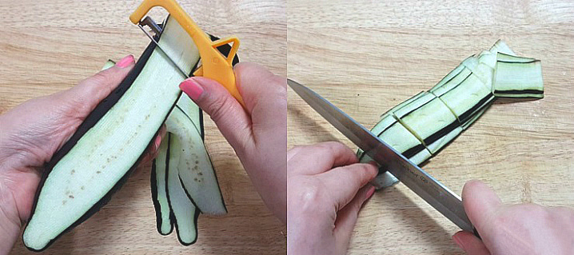
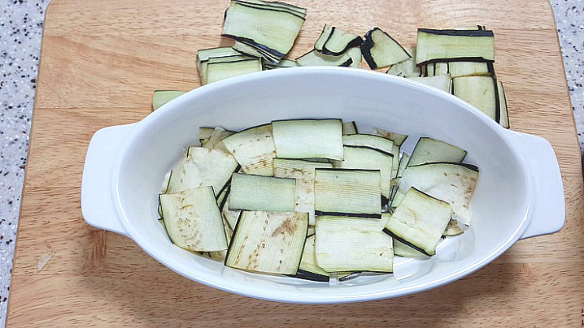
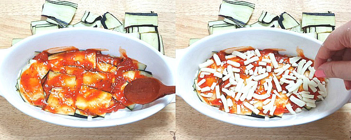
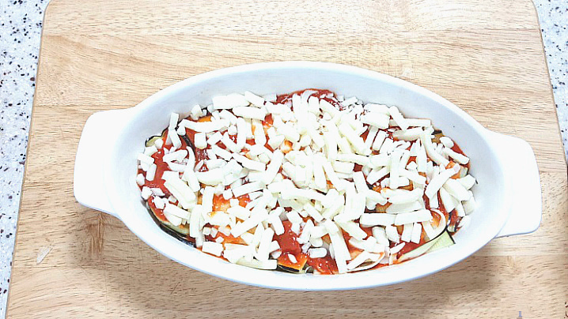
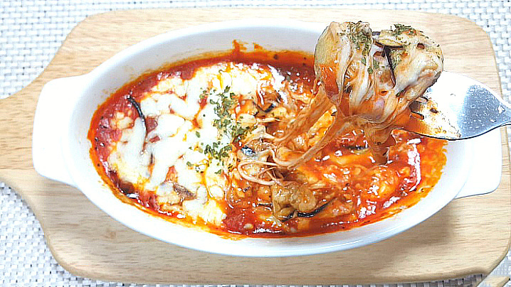

가지 라자냐
가지를 싫어하는 사람도 반할만한 전자렌지 가지 라자냐 초간단 레시피를 소개하겠습니다^^
조리시간 : 10분 이내
재료
가지 1개
토마토 스파게티소스
모짜렐라 치즈
적당량 파슬리가루
조리 순서
| 1. 먼저 깨끗이 씻은 가지는 감자칼로 얇게 슬라이스 해줍니다.두께가 얇아야 빨리 익을 뿐 더러 소스 간이 잘 베이더라구요. 얇게 슬라이스 한 가지는 먹기좋게 한입 크기로 잘라 줍니다. |  |
| 2. 전자렌지 가능한 용기에 가지를 얇게 깔아 줍니다. 가지를 구워서 사용하기도 하지만 가지 두께가 얇게 때문에 굽지 않아도 괜찮더라구요 |  |
| 3. 가지위에 토마토 스파게티 소스를 발라주시고 그위에 모짜렐라 치즈를 골고루 뿌려줍니다. 이 과정을 2-3번 똑같이 반복하면서 쌓아줍니다. |  |
| 4. 마지막 윗면 피자치즈는 본인 기호대로 풍성하게 뿌려주세요. 이 상태로 랩을 씌워 5-6분 돌려주시되 한번에 다 돌리지 마시고 2분씩 끊어 돌려주시면 됩니다. |  |
| 5. 전자렌지 가지 라자냐가 완성되었어요. 냄새가 너무 맛있게 나는데요. |

|
| 6. 한입 먹어보니 어머낫! 쫄깃쫄깃한 가지에 고소한 치즈가 만나 넘 맛있네요!진짜 평소에 가지를 싫어하셨더라도 이건 반할각이랍니다ㅎ무엇보다 전자렌지로 간단하게 만들수 있어 좋아요 |  |